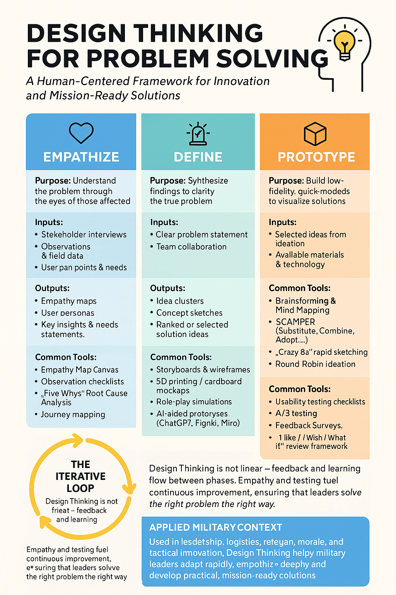
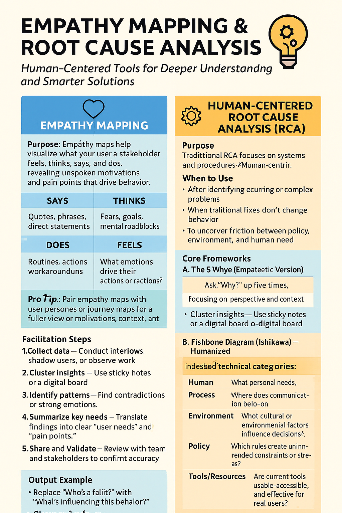

Now that you have a baseline understanind of Design Thinking, Here are a few resources for referance or further research.
Design Thinking Referance Sheet
We hope this referance sheet will help you as you apply Design Thinking principles in your workplace.

Effective Human Centered RCA.
We hope this referance sheet will help you effectively empathize and identify the root cause of problems.

Sources
All images generated using ChatGPT for CSUMB.
Al-Sa'di, A., & Miller, D. (2023). Exploring the impact of artificial intelligence language model ChatGPT on the user experience. International Journal on Technology, Innovation, and Management, 3(1), 1–8. https://doi.org/10.54489/ijtim.v3i1.195
AND Academy. (2024). 7 real-life design thinking examples. https://www.andacademy.com/resources/blog/ui-ux-design/7-design-thinking-examples/
Brown, T. (2009). Change by design: How design thinking creates new alternatives for business and society. Harvard Business Press.
ExperiencePoint. (n.d.). How Netflix used design thinking to reinvent itself, over and over. ExperiencePoint. https://blog.experiencepoint.com/how-netflix-uses-design-thinking
Micheli, P., Wilner, S. J. S., Bhatti, S. H., Mura, M., & Beverland, M. B. (2019). Doing design thinking: Conceptual review, synthesis, and research agenda. Journal of Product Innovation Management, 36(2), 124–148. https://doi.org/10.1111/jpim.12466
Passionates. (2025). Netflix design philosophy: Transforming streaming into a $250B industry. https://passionates.com/netflix-design-philosophy-transforming-streaming/
Proceedings from USNI DARE Innovation Workshop. https://www.usni.org/magazines/proceedings/2023/july/dare-2023-talent-management-and-force-design-navy-future
The Knowledge Academy. (2025). 10 successful design thinking case studies. https://www.theknowledgeacademy.com/blog/design-thinking-case-study/
Gao, J., Zhao, H., Yu, C., & Xu, R. (2023). Exploring the feasibility of ChatGPT for event extraction. Journal of Open Innovation: Technology, Market, and Complexity, 9(3), Article 100034. https://doi.org/10.1016/j.joitmc.2023.100034